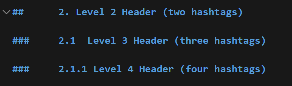
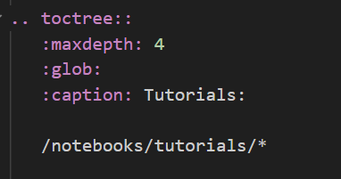

Notes on Configuring a Static Webpage Using Sphinx
This file will document usefull notes and/or commands for creating/maintaining a static webpage using the opensource software Sphinx which is currently hosted using GitHub personal pages.
Jupyter notebooks can be hosted with Sphinx on these webpages as implemented in this page. Main headers are shown on the side menu, as well as subheaders in a collapsed list.
1. Header Syntax
Headers in a Jupyter notebook are dictated by the amount of hashtags ‘#’ placed before the text. One hashtag indicates a main header, which should be only used for the title of the notebook, and decides the header that is placed in the side menu. Each subsequent sub-header in the notebook can have two or more hashtags depending on the structure desired. For example, the more hashtags, the smaller the headers will be.
2. GIFs, Videos or Animations in Jupyter Notebook
The syntax to host GIFs, videos or animations in Markdown is as follows:
..figure:: filepath.gif
The file, or folder of the figure being displayed must be in the same folder the notebook is stored. In this case, the GIF is stored in a folder called “GIFs”, within the same folder this notebook is stored.
For example, this text “.. figure:: GIFs/Atom.gif” shows the following GIF:
3. Storing Notebooks to be Compiled by Sphinx
Notebooks that you want displayed in the webpage must be stored inside the same folder as the ‘index.rst’ file, and specified within this file. Each section in the side menu has its own folder and is defined in the index file with its title as follows:
“.. toctree::” is the mandatory definition, and this is what specifies the file path (as shown at the bottom).
“maxdepth” is what dictates which headers are collapsed in the side menu
“caption” is the text that will be displayed as the title of the section in the side menu
At the end is the file folder path for the notebooks to be displayed, and the ‘*’ means it will take all of the notebooks in the specified folder
4. Using Make to Build HTML
When making changes to notebooks in the website, you are able to build the new website in the ‘index.html’ link.
Make sure all changes are saved
Make sure the directory you are in is ‘C:\mainCSG.github.io:nbsphinx-math:docs’
Type the following commands:
‘make clean’
‘make html’
Once this is done running, all saved changes will appear in the browser when the ‘index.html’ file is opened.